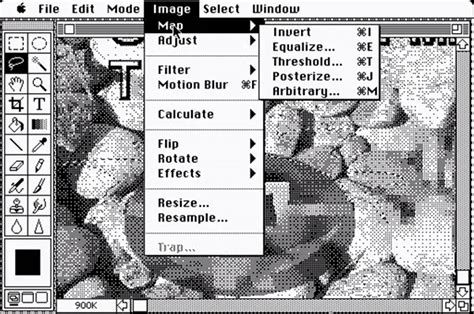
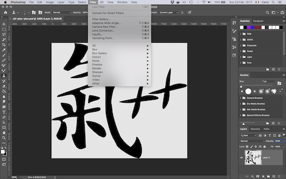

C'hi++ è un tentativo di spiegare il significato
dell'esistenza nei termini dell'informatica.
Questa miscela di spiritualità e tecnologia è evidente già nel nome
C'hi++ — un gioco di parole fra il termine giapponese
C'hi, ovvero: soffio vitale, e il linguaggio di
programmazione chiamato: C++ — e nel modo in cui verrà
gestita l'evoluzione della disciplina, che è lo stesso che viene
utilizzato per il software open-source.
I precetti del C'hi++ saranno illustrati in un libro dal titolo:
C'hi++ - Il senso della vita è il debug
e sono riassunti nel manifesto:
C'hi++ - Proposta per una metafisica open-source,
che potete scaricare o leggere dal link qui sopra.
Tutti i testi, le immagini e i dati del C'hi++ sono raccolti in un
repository su GitHub. Se volete altre informazioni su questo
progetto, potete trovarle nei file:
README e
MANIFEST.
氣
La mitologia ha sempre mescolato il soprannaturale con il livello
più alto dello sviluppo scientifico o tecnologico.
Anticamente, abbiamo attribuito una controparte divina al lampo
che generava il fuoco, al moto degli astri, alla meteorologia.
Più recentemente, Poe, in Eureka, ha ipotizzato che l'Universo sia
il frutto dell'azione contrapposta della Gravità, che lui interpreta
come la tendenza di tutta la materia a tornare all'Uno primigenio e
dell'Elettricità, che al contrario, tende a dividere.
All'inizio del Secolo scorso, infine, i Futuristi hanno mitizzato i simboli
del progresso tecnologico — velocità, eliche, aeroplani, automobili —,
rendendoli l'oggetto della loro arte.
Nulla di strano, quindi, che all'inizio di questo Millennio
si tenti un paragone fra le regole, note, del software
e le regole ignote dell'Universo in cui viviamo.
Tutto nasce da una domanda: È possibile dare una spiegazone
dell'esistenza sftuttando solo ciò di cui abbiamo esperienza diretta?
Le religoni, per “funzionare”, richiedono da una a tre
dimensioni aggiuntive, oltre quelle note; la Scienza, per le sue
superstringhe ha bisogno almeno di sette dimensioni aggiuntive,
ovvero il doppio di quelle che servono per un Aldilà non spirituale.
Esiste una spiegazione più semplice?
Dopo averci ragionato su per una quarantina di
anni, posso dire che sì: una spiegazione più semplice esiste ed è anche
compatibile con molti dei principî delle religioni canoniche,
alle quali C'hi++ non vuole sostituirsi, ma affiancarsi.
Ovviamente, il C'hi++ non è una spiegazione assoluta e definitiva del
Significato dell'Esistenza, ma soltanto un modello incompleto e perfettibile.
È per questo motivo, che ha una versione, come il software: perché possa
evolvere col tempo, così come avviene per il software.
Questa è la prima versione del programma Photoshop, nel 1990:

e questo è Photoshop oggi, trent'anni dopo:

Così come i modelli matematici usati per la meteorologia non rendono tutta la complessità dei movimenti delle masse d'aria dell'atmosfera, ma forniscono comunque delle previsioni attendibili, così il C'hi++ non fornisce una descrizione completa e accurata di ciò che è, è stato e sarà, ma può fornire una risposta non fideistica o dogmatica ad alcune domande riguardanti la nostra vita.
氣
I principî del C'hi++ si basano su una cosmogonia che riprende
alcune idee di Poe, come il contrasto fra contrazione ed espansione,
a cui aggiunge
un maggior livello di dettaglio, definendo gli ipotetici elementi che
costituiscono l'Universo ovvero, gli: spazioni, da cui il
nome: Spazionismo
(lo so che non è un nome serio, ma quando ho cominciato a formulare questa
teoria, quindici anni fa, non avrei mai immaginato di renderla pubblica).
Per lo Spazonismo l'Universo è costituito da elementi infinitesimali
dotati di “esistenza potenziale”.
Così come lo schermo di un computer è costituito da una matrice
bidimensionale di pixel, generalmente spenti, ma capaci di accendersi
se colpiti da un raggio di luce, così l'Universo è costituito da una matrice
tridimensionale di spazioni, capaci di acquisire massa e quindi esistere
se ricevono energia.
La vita dell'Universo è vista come un ciclo continuo:
Fase 1. L'universo è vuoto, tutta l'energia è concentrata in
un'unico punto, tenuta insieme dalla Gravità.
Fase 2. L'Elettricità (ovvero una forza che causa separazione)
sopraffà la Gravità e causa l'esplosione dell'Uno.
L'energia comincia a espandersi nell'Universo, irradiando gli spazoni
che quindi assumono massa ed esistenza, generando le stelle e i pianeti
così come li conosciamo.
Fase 3. Quando la spinta data dall'Elettricità diminuisce, la
Gravità inverte il moto dell'energia/materia; l'Universo si contrae
tornando a concentrarsi nell'Uno.
Quando tutta l'energia dell'Universo è di nuovo concentrata nell'Uno,
il ciclo ricomincia.
Spazioni a parte, questa ipotesi non è poi così irrealistica; l'unico
atto di fede che viene richiesto a chi legge riguarda il fatto che l'Universo
tornerà sicuramente a collassare su sé stesso.
Di questo, a oggi, non c'è prova scientifica, ma nella Bhagavad-Gita
si afferma qualcosa di piuttosto simile:
Alla fine del proprio ciclo d'esistenza, un mondo collassa su se stesso, riassorbendo in una massa tenebrosa ogni forma di manifestazione: esseri viventi e oggetti inanimati giacciono allo stato latente in una condizione caotica. In seguito, dopo la vittoria dei Deva sugli Asura, i sovrani del caos residuale, ogni potenzialità esce dallo stato virtuale precedente per manifestare nel nuovo mondo le proprie caratteristiche e per ricoprire qui il ruolo che gli compete, in conformità al dharma ripristinato.
Una volta che l’Universo collassato esploderà nuovamente, i casi possibili
saranno due:
Caso 1. Potrebbe essere che un Big Bang avvenga solo in determinate
condizioni e che quelle condizioni portino necessariamente a un Universo
identico a quello come noi lo conosciamo adesso; quindi, se l’Uno esploderà
di nuovo, ricomincerà tutto da capo.
Caso 2. Se ogni Big Bang avviene in circostanze e con modalità specifiche
quando l'Uno esploderà di nuovo, nascerà un nuovo Universo, che potrà avere
pochi o nessun punto di contatto con quello corrente.
La prima ipotesi è possibile, ma poco probabile, quindi diamo per scontato
che quella corretta sia la seconda.
Per quanto bassa possa essere la probabilità che si verifichino due esplosioni
uguali, in un lasso di tempo infinito non possiamo escludere che questo Universo
tornerà a manifestarsi e che anche ciò che c’è in esso possa tornare a essere.
Noi compresi.
Ma chi siamo, “noi”? Se la materia altro non è che la manifestazione di una
unica Energia, ha poco senso distinguerci gli uni dagli altri; dovremmo
ragionare invece come il poeta iraniano Saadi di Shiraz:
Son membra d’un corpo solo i figli di Adamo,
da un’unica essenza quel giorno creati.
E se uno tra essi a sventura conduca il destino,
per le altre membra non resterà riparo.
Però, se davvero siamo tutti degli epifenomeni, possiamo
manifestarci ora qui ora lì, a seconda dei casi. E se io, in questo
ciclo dell’Universo, mi metto a spacciare droga fregandomene delle
persone che ammazzo, in un altro ciclo di questa particolare specie
di Universo potrei ritrovarmi in uno di quei drogati subendo le
conseguenze delle mie stesse azioni. È quindi preferibile che io mi
comporti bene e che cerchi di convincere anche gli altri a
comportarsi bene, perché, come recita il Mantiq al-Tayr:
O Creatore, tutto il male o il bene che feci, in verità lo feci solo a me stesso.
Il problema, come sempre, è capire cosa sia davvero “bene”.
Per farlo, abbiamo bisogno di introdurre l'unico elemento realmente
metafisico del C'hi++:
una sorta di hard-disk dell'Universo, simile al Vāsanā
di Yoga e Buddimo, nel quale rimane traccia delle scelte che abbiamo
fatto durante le nostre esistenze e delle conseguenze che hanno generato.
Se capiamo che una nostra azione ha avuto delle conseguenze negtive,
quell'azione verrà “memorizzata” fra gli errori, nella speranza che
non venga ripetuta in altre occasioni.
Al contrario, le azioni che hanno degli esiti positivi venrranno
“ricordate” come buone, affinché le si ripeta in altri cicli di
vita dell'Universo.
In altre parole, per il C'hi++, ciascun essere senziente è uno dei neuroni
di un cervello (l'Universo) a cui contribuisce a dare forma grazie a
ciò che impara nel corso delle sue esistenze.
Se riconosciamo i nostri errori come tali, è possibile che non li
ripeteremo in futuro; altrimenti continueremo a commetterli, generando
delle forme “dolorose” dell'Universo.
Per questo motivo, secondo il C'hi++, “il senso della Vita è il debug”,
perché solo analizzando e correggendo i nostri errori, così come si fa
con il software, potremo migliorare la “forma” dell'Universo e, di
conseguenza, le nostre esistenze.
Riassumendo, il Paradiso e l'Inferno non sono altrove: sono solo due
stati possibili dell'Universo e siamo noi, con le nostre azioni e le
nostre intenzioni, a decidere in quale dei due vivere.